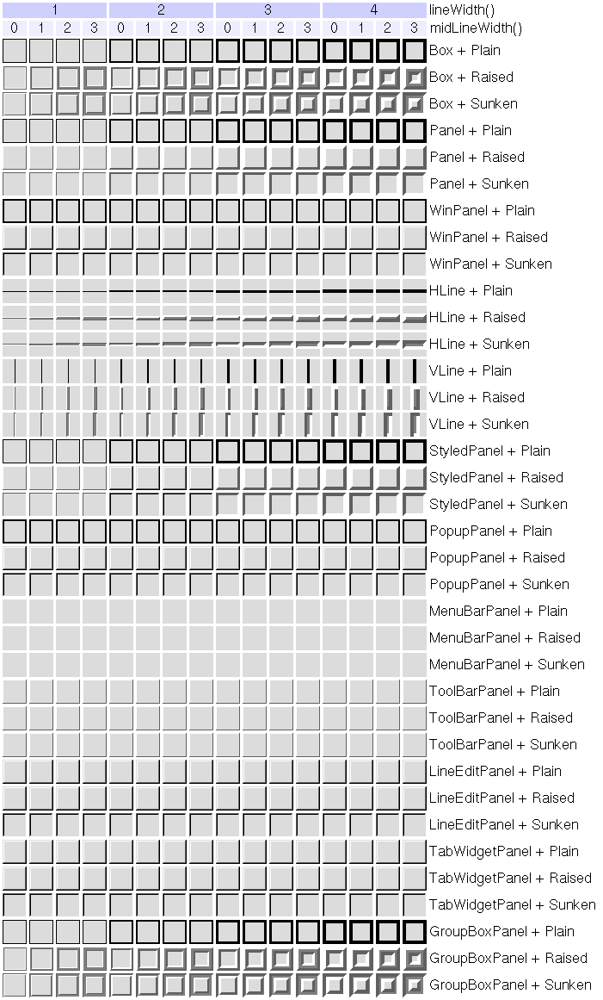

| Home · All Classes · Main Classes · Annotated · Grouped Classes · Functions |
The QFrame class is the base class of widgets that can have a frame. More...
#include <QFrame>
Part of the QtGui module.
Inherits QWidget.
Inherited by Q3Frame, Q3ProgressBar, QAbstractScrollArea, QLabel, QLCDNumber, QSplitter, QStackedWidget, and QToolBox.
|
|
The QFrame class is the base class of widgets that can have a frame.
QMenu uses this to "raise" the menu above the surrounding screen. QProgressBar has a "sunken" look. QLabel has a flat look. The frames of widgets like these can be changed.
QLabel label(...);
label.setFrameStyle(QFrame::Panel | QFrame::Raised);
label.setLineWidth(2);
QProgressBar pbar(...);
label.setFrameStyle(QFrame::NoFrame);
The QFrame class can also be used directly for creating simple frames without any contents, although usually you would use a QHBox or QVBox because they automatically lay out the widgets you put inside the frame.
A frame widget has four attributes: frameStyle(), lineWidth(), midLineWidth(), and margin().
The frame style is specified by a frame shape and a shadow style. The frame shapes are NoFrame, Box, Panel, StyledPanel, HLine and VLine; the shadow styles are Plain, Raised and Sunken.
The line width is the width of the frame border.
The mid-line width specifies the width of an extra line in the middle of the frame, which uses a third color to obtain a special 3D effect. Notice that a mid-line is only drawn for Box, HLine and VLine frames that are raised or sunken.
The margin is the gap between the frame and the contents of the frame.
This table shows the most useful combinations of styles and widths (and some rather useless ones):

This enum type defines the 3D effect used for QFrame's frame.
| Constant | Value | Description |
|---|---|---|
| QFrame::Plain | 0x0010 | the frame and contents appear level with the surroundings; draws using the palette foreground color (without any 3D effect) |
| QFrame::Raised | 0x0020 | the frame and contents appear raised; draws a 3D raised line using the light and dark colors of the current color group |
| QFrame::Sunken | 0x0030 | the frame and contents appear sunken; draws a 3D sunken line using the light and dark colors of the current color group |
Shadow interacts with QFrame::Shape, the lineWidth() and the midLineWidth(). See the picture of the frames in the main class documentation.
See also QFrame::Shape, lineWidth(), and midLineWidth().
This enum type defines the shapes of a QFrame's frame.
| Constant | Value | Description |
|---|---|---|
| QFrame::NoFrame | 0 | QFrame draws nothing |
| QFrame::Box | 0x0001 | QFrame draws a box around its contents |
| QFrame::Panel | 0x0002 | QFrame draws a panel to make the contents appear raised or sunken |
| QFrame::StyledPanel | 0x0006 | draws a rectangular panel with a look that depends on the current GUI style. It can be raised or sunken. |
| QFrame::HLine | 0x0004 | QFrame draws a horizontal line that frames nothing (useful as separator) |
| QFrame::VLine | 0x0005 | QFrame draws a vertical line that frames nothing (useful as separator) |
| QFrame::WinPanel | 0x0003 | draws a rectangular panel that can be raised or sunken like those in Windows 95. Specifying this shape sets the line width to 2 pixels. WinPanel is provided for compatibility. For GUI style independence we recommend using StyledPanel instead. |
When it does not call QStyle, Shape interacts with QFrame::Shadow, the lineWidth() and the midLineWidth() to create the total result. See the picture of the frames in the main class documentation.
See also QFrame::Shadow, QFrame::style(), and QStyle::drawPrimitive().
This property holds the frame's rectangle.
The frame's rectangle is the rectangle the frame is drawn in. By default, this is the entire widget. Setting the rectangle does does not cause a widget update. The frame rectangle is automatically adjusted when the widget changes size.
If you set the rectangle to a null rectangle (for example QRect(0, 0, 0, 0)), then the resulting frame rectangle is equivalent to the widget rectangle.
Access functions:
This property holds the frame shadow value from the frame style.
Access functions:
See also frameStyle() and frameShape().
This property holds the frame shape value from the frame style.
Access functions:
See also frameStyle() and frameShadow().
This property holds the width of the frame that is drawn.
Note that the frame width depends on the frame style, not only the line width and the mid-line width. For example, the style NoFrame always has a frame width of 0, whereas the style Panel has a frame width equivalent to the line width.
Access functions:
See also lineWidth(), midLineWidth(), and frameStyle().
This property holds the line width.
Note that the total line width for HLine and VLine is specified by frameWidth(), not lineWidth().
The default value is 1.
Access functions:
See also midLineWidth() and frameWidth().
This property holds the width of the mid-line.
The default value is 0.
Access functions:
See also lineWidth() and frameWidth().
Constructs a frame widget with frame style NoFrame and a 1-pixel frame width.
The parent and f arguments are passed to the QWidget constructor.
Destroys the frame.
Returns the frame style.
The default value is QFrame::NoFrame.
See also setFrameStyle(), frameShape(), and frameShadow().
Sets the frame style to style.
The style is the bitwise OR between a frame shape and a frame shadow style. See the picture of the frames in the main class documentation.
The frame shapes are given in QFrame::Shape and the shadow styles in QFrame::Shadow.
If a mid-line width greater than 0 is specified, an additional line is drawn for Raised or Sunken Box, HLine, and VLine frames. The mid-color of the current color group is used for drawing middle lines.
See also frameStyle().
The mask of the QFrame's shadow.
See also QFrame::frameShadow.
The mask of the QFrame's shape.
See also QFrame::frameShape.
| Copyright © 2005 Trolltech | Trademarks | Qt 4.0.0 |